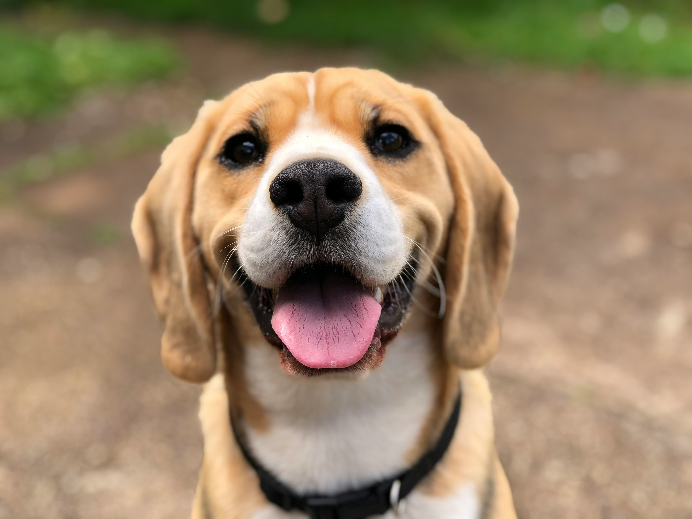

>
>



Cada uno de nuestros peludos tiene una historia única y mucho amor para dar. Explora nuestro catálogo y descubre quién está esperando para cambiar tu vida tanto como tú cambiarás la suya.
>

Tu apoyo financiero nos ayuda a cubrir gastos médicos, alimentación y mantenimiento de nuestros rescatados mientras encuentran su hogar definitivo.